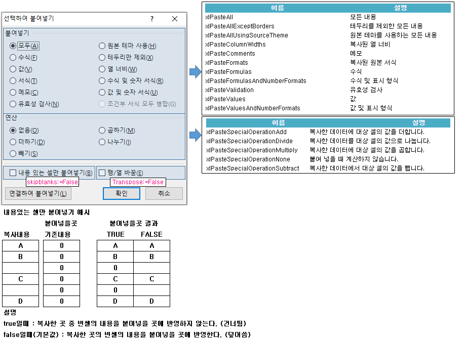

카피 : ActiveSheet.Paste '모두(셀선택상태로, PasteSpecial의 초기값, 모두_연산없음_빈셀도복사_행열바꿈없음)
카피 : Selection.PasteSpecial xlPasteFormats '서식만
카피 : Selection.PasteSpecial xlPasteValues '값만
카피 : Selection.PasteSpecial xlPasteValuesAndNumberFormats '값 및 표시 형식
copy(cut은 확장범위 붙여넣기는 안됨)
• Range("T1:T2").Copy Destination:=Range("U2") 'Destination은 목적지 셀 하나가 기본
• Range("T1:T2").Copy (Destination:=Range("U2")) '()안에 매개변수 넣을 때는 매개변수 써야 함
• Range("T1:T2").Copy (Range("U2")) '이거는 에러난다. 매개변수에 개체변수가 들어가면 안됨...
• Range("T1:T2").Copy Destination:=Range("U2:V5") 'Destination을 하나이상의 셀로 지정하면 반복되었을때 딱맞는 범위가
지정되지 않으면 첫셀 하나가 지정된 것으로 간주되고 딱맞으면 반복적으로 채워준다.
• Range("T1:T2").Copy Range("U2") 'Destination:= 생략 가능
• 동작 후 Application.CutCopyMode = False 상태가 된다. (카피 상태 해제)
현재시트에서 다른시트로 copy 가능. 시트이동 없음.
• Range("b2:c3").Copy Sheets("sheet2").Range("p11")
다른시트 범위를 copy 하여 현재시트로 가져오기 가능. 시트이동 없음.
• sheets("sheet1").range("b2:c3").Copy Sheets("sheet2").Range("p1")
ActiveSheet.Paste는 선택하여 붙여넣기의 기본값이다.
• 매개변수 : Selection.PasteSpecial Paste:=xlPasteValues, Operation:=xlNone, SkipBlanks:=False, Transpose:=False
• Paste:=xlPasteValues : 모두 붙여넣기, Paste:= 생략하여 xlPasteValues 형식으로 입력 가능
• Operation:=xlNone : 연산 없음, Operation:= 생략하여 xlNone 형식으로 입력 가능
• SkipBlanks:=False : 빈셀 건너뜀 하지 않음, SkipBlanks:= 생략하여 false 형식으로 입력 가능
• Transpose:=False : 행열바꿈 하지 않음, Transpose:= 생략하여 false 형식으로 입력 가능
★ 매개변수(Transpose:=) 지정시 순서 상관없음. 지정하지 않으면 순서맞춰야함
★ 매개변수 지정하지 않을때 사이에 값을 지정하지 않을경우 쉼표(,)로 구분해야함
선택하여 붙여넣기(PasteSpecial)
Range("t1").Select
Selection.Copy
Range("v2").Select
Selection.PasteSpecial Paste:=xlPasteValues, Operation:=xlNone, SkipBlanks:=False, Transpose:=False
Application.CutCopyMode = False
엑셀에서 셀카피 후 목적지 셀 클릭하고 우클릭하면 다음 메뉴가 나온다.

find로 찾지못한 변수는 Nothing 상태이다.
• If Not 변수 Is Nothing Then : 변수가 Nothing이 아니라면 => 설정이 되었다면(찾았다면)
• If 변수 Is Nothing Then : 변수가 Nothing이라면 => 설정이 안되었다면(찾지 못했다면)
• ★ Nothing상태의 변수를 사용(선택 또는 접근 등)하면 에러가 난다.
카피 : Set C = ActiveSheet.Range("H:H").Find(What:=name, LookIn:=xlValues, Lookat:=xlWhole) 'Lookat:=xlPart
카피 : Set C = range개체.FindNext(C) 'AFTER:=C, 현재조건대로 다음찾기, 여러번 반복할때 C가 재설정되어야 함
카피 : Cells.Find(what:="찾을값", AFTER:=ActiveCell, LookIn:=xlValues, LookAt:=xlWhole) 'Lookat:=xlPart
find 참고. 괄호가 있는것 주의.(기본:LookIn:=xlFormulas, 코드내부에서는 유효, 나오면 다시 기본으로)
Dim 찾기결과 As Range
Set 찾기결과 = Cells.Find(what:="찾는값", After:=ActiveCell, LookIn:=xlFormulas, LookAt:= _
xlPart, SearchOrder:=xlByRows, SearchDirection:=xlNext, MatchCase:=False _
, MatchByte:=False, SearchFormat:=False)
• what:="찾는값" => "찾*":'찾'으로 시작되는 것. "찾?":'찾'으로 시작되는 두글자
• After:=ActiveCell '설정된 셀 제외한 다음부터 찾기, 결과가 없으면 ActiveCell이후 끝까지 찾고 처음부터 다시찾는다.
• LookIn:=xlFormulas
- C3셀의 수식이 '=IF(1=1,"true","false")'이면 C3셀에 표시되는 결과는 'TRUE'이다
- LookIn:=xlFormulas : 수식에서 찾는다면 'true', 'false', 'IF' 등 모두 찾아진다.
- LookIn:=xlValues : 값에서 'flase'를 찾으면 찾지 못한다.
- LookIn:=xlComments : 메모에서 찾는다.
• LookAt:=xlPart : 부분일치 또는 전체일치(xlWhole)
• SearchOrder:=xlByRows : 검색할 순서 - 행 또는 열(xlByColumns)
• SearchDirection:=xlNext : 검색할 방향 - 순방향 또는 역방향(xlPrevious)
• MatchCase:=False : 대소문자 구분 여부
• MatchByte:=False : 더블 바이트 문자 지원을 설치한 경우에만 사용(예: 중국어)
• SearchFormat:=False
바꿀범위.Replace what:="바꿀값", replacement:="결과값" '괄호가 없는것 주의
• LookIn:=xlValues, LookIn:=xlFormulas : 엑셀 또는 VAB에서 설정하였다면 (vba에서)나와도 바뀐 설정대로 간다.
- 코드 내부에서 LookIn:=xlValues, LookIn:=xlFormulas 선택하여 설정이 필요하다.
• LookIn:=xlValues : ★ 화면에 보이는 값대로 찾을때 설정해 주어야 함.
• 범위.Activate하면, 범위.Select와 같다(이전 Select해제)
• Find 결과를 AFTER:="찾을값" 에 활용할때, Select 또는 Activate 해 주어야 하는지 체크. 그렇지 않으면 선택되지 않는다.
- AFTER:=Find 결과(변수) 또는
- Find 결과를 Select 또는 Activate 해 주고 AFTER:=Activecell 형식으로 활용한다.
find : vba코드 참고
Sub 매크로2() 반복횟수 = 10
Dim 반복 As Integer Set 찾은셀 = Range("a1") '초기값
Dim 반복횟수 As Integer Set 찾을범위 = Cells
Dim 찾을값 As String 찾을값 = "임시"
Dim 찾은셀 As Range
Dim 찾을범위 As Range
For 반복 = 1 To 반복횟수
Set 찾은셀 = 찾을범위.Find(what:=찾을값, AFTER:=찾은셀, LookIn:=xlValues, LookAt:=xlWhole)
'LookIn:=xlFormulas, LookAt:=xlPart
'찾은셀 활용 코드
Next
'찾지 못했을때 에러방지 방법1 : 건너뛰는 방법
'Set 찾은셀 : 찾지못했을때(찾은셀 Is Nothing) 변수지정시는 에러가 안나고
'Set 찾은셀 : 찾았을때(Not 찾은셀 Is Nothing)
'Nothing 상태의 변수를 활용(선택 등)할 때 에러가 난다.
If 찾은셀 Is Nothing Then GoTo 찾지못했을때 'GoTo 찾지못했을때 => '찾지못했을때'코드로 건너뜀
'찾았을때 코드
찾지못했을때:
'찾지 못했을때 에러방지 방법2 : If로 감싸는 방법
If Not 찾은셀 Is Nothing Then
'찾았을때 코드
Array 사용방법
• Dim 방향 As Variant '변수에 배열을 담을때는 변수형을 Varant로 한다?
방향=Array("부산", "대구", "광주", "목포") '--방향(1)=부산, ..., 방향(4)="목포"
다차원의 배열 차수는 콤마(,)로 구분, 배열크기 알아내기(Ubound, Lbound) count안됨
• Dim 방향(1 To 10) As String '1차원배열을 셀에 뿌리면 가로로 뿌려짐
• Dim 방향(1 To 10, 3 To 8) As String '2차원배열의 가로는 마지막 차수
• Ubound(방향,1) : 방향 배열의 첫번째 차수(1 To 10)의 최대값, 10
• Lbound(방향,1) : 방향 배열의 첫번째 차수(1 To 10)의 최소값, 1
• Ubound(방향,2) : 방향 배열의 두번째 차수(3 To 8)의 최대값, 10
• Lbound(방향,2) : 방향 배열의 두번째 차수(3 To 8)의 최소값, 1
• 차수의 값 개수 : Ubound(배열,차수) - Lbound(배열,차수) + 1, 음수가 있어도 상관없음
배열선언 방법1 : 배열의 크기를 지정하여 선언하는 2가지 방법
• Type1 : Dim 배열변수(배열크기) As 데이터형 '배열크기는 상수, 정수이며 음수가능 1단위 증감
- Dim 배열변수(3) as String
- Option Base 1 을 선언하지 않으면 '0' 부터 시작
- ex : Option Base 1 미설정 => 배열개수=0,1,2,3 4개
- ex : Option Base 1 설정 => 배열개수=1,2,3 3개
• Type2 : Dim 배열변수(시작 To 끝) As 데이터형
- ex : Dim 배열변수(1 To 10) As String
- ex : Dim 배열변수(1 To 10, -3 To 2) As String
- ex : Dim 배열변수(1 To 가로) As String '값이 정해진 변수 사용 가능
- ex : Dim 배열변수(1 To 가로, -3 To 세로) As String '값이 정해진 변수 사용 가능
• Type1, Type2로 배열크기를 지정한 경우(빈배열 선언이 아닌 경우) Redim사용 안됨.
• 공통 : 데이터형을 선언하였다면 바꿀수 없음. Redim시에도 데이터형 표시 안하는것 주의.
배열선언 방법2 : 빈 배열 선언후, 코드 과정에서 배열크기 지정, Redim
• 순서 : 빈배열 선언, Redim으로 크기지정(값이 정해진 변수 사용 가능), Redim하면 기존 값 없어짐
- Dim 배열변수() As String
Redim 배열변수(1 To 10, 3 To 8) '변수값이 정해졌을때는, Redim 배열변수(1 To 세로개수, 3 To 가로개수) 형식으로 사용
배열선언 방법3 : 기존값 보존(Preserve)하면서 배열크기 변경, Redim Preserve
• 순서 : 빈배열 선언, Redim Preserve로 크기변경, 새로운 크기 내의 저장된 값 사라지지 않음
- Dim 배열변수() As String '★ 1차수를 수정하면 에러남(1 To 10), 2차수는 증가 감소 가능
Redim 배열변수(1 To 10, 3 To 8) '변수값이 정해졌을때는, Redim 배열변수(1 To 세로개수, 3 To 가로개수) 형식으로 사용
Raneg범위를 배열에 담기(1개 셀이라도 2차원 배열이다), ★ 변수형을 Variant로 지정해야 된다
• Dim 배열() As Variant
배열 = Range("A1:B4") '배열(1 To 4, 1 To 2)
• 첫셀 좌표는 배열(1,1) 이다. 1개셀은 안담긴다. 1Area만 담긴다.(여러범위라도 첫범위만)
• Join 안됨(한개행이라도 2차원 배열이다)
Transpose 예시
• 타겟.Resize(UBound(배열, 2), UBound(배열, 1)) = Application.Transpose(배열)
• 마지막 차수가 오른쪽으로 확장되고, transpose 결과범위를 왼쪽에 설정해두고 Application.Transpose(배열)
Union()은 잘 사용해야 한다.
• 동일 Sheet의 범위에서만 적용이 된다.
• 기본적으로 복사가 안되고, 같은 범위 and 같은 가로일때, 같은 가로폭 and 세로같은 column일때만? 복사 됨
Split함수 결과를 배열에 담기, ★1차원 배열이다.
• Dim 문자열 As String
문자열 = "a,b,c,d,e,f"
Dim 배열() As String
배열 = Split(문자열, ",")
MsgBox 배열(0) '=> a, 0부터 지정됨
MsgBox UBound(Split(문자열, ","), 1) '5 (0부터 시작되어 0~5 = 6개)
MsgBox LBound(Split(문자열, ","), 1) '0 (0부터 시작되어 0~5 = 6개)
1차원배열은 Join 사용 가능
• Dim 배열() As String
Dim 문자열 As String
배열 = Split("a,b,c,d,e,f", ",")
문자열 = Join(배열, ":")
MsgBox 문자열 'a:b:c:d:e:f
배열 초기값 (String은 공백, Byte는 0)
• Dim 문자열(1 TO 10) As String '담기지 않은곳은 공백. COUNTIF 안되는 공백.(""아님)
• Dim 숫자(1 TO 10) AS Byte '담기지 않은곳은 0.